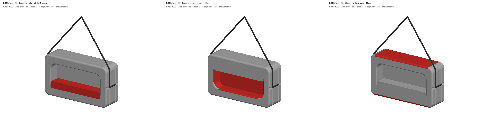

Three existing selections: 15 mm granite, 15 mm wood and 60 mm pinch. Human CAD review pending; neutral diagnostic previews. Current app finishes and interaction unverified.

Six full views · Prior/current front, side and top · Oblique comparison
Review notes · Current review identity · Diagnostic verification
Does #11 look right?